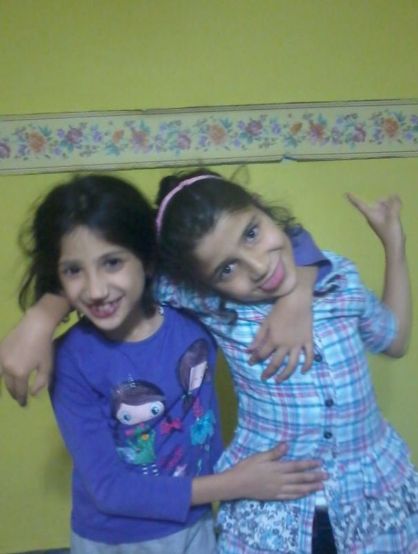

CNM YOYOM İYİ Kİ DOĞDUN 21 YAŞ VAY BE SIRTINDA AĞRILAR ÇIKCAK şaka bi yana hala sanıyorum ki ömer seyfettinin tipinden korkan mustafa ceceli fanı kafası yarık bi veletsin ama büyüyoz😢 hep bu yaşlarımızı hayal etmiştik ben o zamanlar sen kiraz mevsimi öykü gibi modacı olcan ben de bilimadamı olcam sanıyordum (mezun plus oluşumuz baya ironik) ama hayat yüzümüze pek gülmedi malesefkine . inşallah allah bizi bu zamana dek çok güzel bir hayatımız olsun diye bekletmiştir ben inanıyorum ki jakuzi konserine gidicez sen de inanmaya devam .iyi ki doğdun seni çokçok seviyom Her şeyin en iyisini hak ediyorsun unutma yanında mal gibü anırabildiğim tek kişisin iyi ki hayatımdasın VE ERZURUMUN DÜŞMAN İŞGALİNDEN KURTULUŞUNUN 107. YILDÖNÜMÜ🐺🐺🐺 normal bi doğum günü mesajı atmak istemedim ama alttaki fotoyla daha çok canın sıkılcak gibi habeş kralına benziyom birazcık şimdiden sorry ama bu kıyafet en sevdiğim kıyafetimdi ve dedemin evini çok özledim
seni çok seviyorum